Screenshots are from version 1.0.0 (570). Your screen may look slightly different, depending on your iPad and Interface size.
Everything you need to make your first 3D character, from a ball of clay to a finished, animated scene.
New to 3D? Read Getting started and Your first character, then come back to the other sections when you need them. Press and hold any button in the app to see what it does.
1. Getting started
Character Studio works on your iPad. There's no account and no internet needed, and your projects stay on your device.
The app is organised in three stages, shown in the middle of the top bar. A character usually moves from left to right, but you can jump back at any time:
Build: make the character. Sculpt, Model, Paint, Garment and UV.
Animate: bring it to life. Rig and Animate.
Present: stage the finished shot. Look, Light, Camera, World, Output, Materials, Touch-up and FX.
Tap a stage, then pick one of its tools in the second switch beside it.
Undo is always there: tap the curved arrow in the top bar, or tap with two fingers. Tap with three fingers to redo.
2. Finding your way around
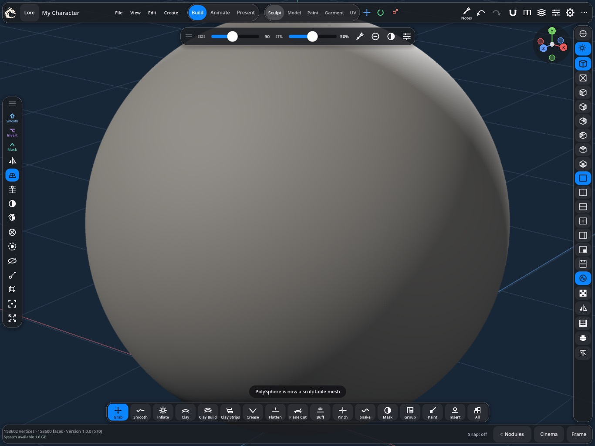
123456789
1 File, View, Edit, Create · 2 stage and tool switches · 3 Notes, Undo/Redo, Settings and ⋯ · 4 left rail · 5 right rail · 6 brush size and strength · 7 bottom bar of brushes · 8 status line · 9 Nodules, Cinema, Frame
Top bar, left:File, View, Edit and Create menus.
Top bar, middle: the stage switch and the tools for the current stage.
Top bar, right: Notes, Undo and Redo, Settings (the gear) and ⋯, which holds extras such as Help, framing, references, Customize and hiding the interface.
Left rail: your tools and Quick bar shortcuts.
Right rail: view controls: projection, camera angles, split views, lighting and display options.
Bottom bar: the brushes or tools for the mode you're in. In Sculpt it shows brushes such as Grab, Smooth, Clay and Crease.
Bottom right:Nodules, Cinema and Frame (which fits your model in view).
Status line, bottom left: how many vertices and faces your model has, and the app version.
Panels can be moved, docked and shrunk. Tap – on a panel's title bar to shrink it, and tap again to open it.
3. Touch and Pencil
One finger on empty space: orbit around the model.
Two fingers: drag to pan, pinch to zoom.
Tap a part: make it the active part.
Apple Pencil: sculpts, paints and draws. Fingers always move the view, so you can't change your model by accident.
Two-finger tap: undo. Three-finger tap: redo.
Press and hold a button: see what it does, without pressing it.
Pencil pressure, double-tap and squeeze settings are in Settings › Apple Pencil.
4. Your first character
Tap Create and choose Sphere.
In Build › Sculpt, pick Grab from the bottom bar and pull out a rough head and body shape.
Turn on symmetry (the mirror icon) so both sides change together.
Switch to Clay or Clay Strips to build up forms, and Smooth to soften them.
When the shape is right, run Simple Quad Remesher for a clean, even mesh. See Remeshing.
In Build › Paint, add colour.
In Present › Look, try the Anime style, then Present › Output to save a picture.
Save with File › Save.
5. Projects and saving
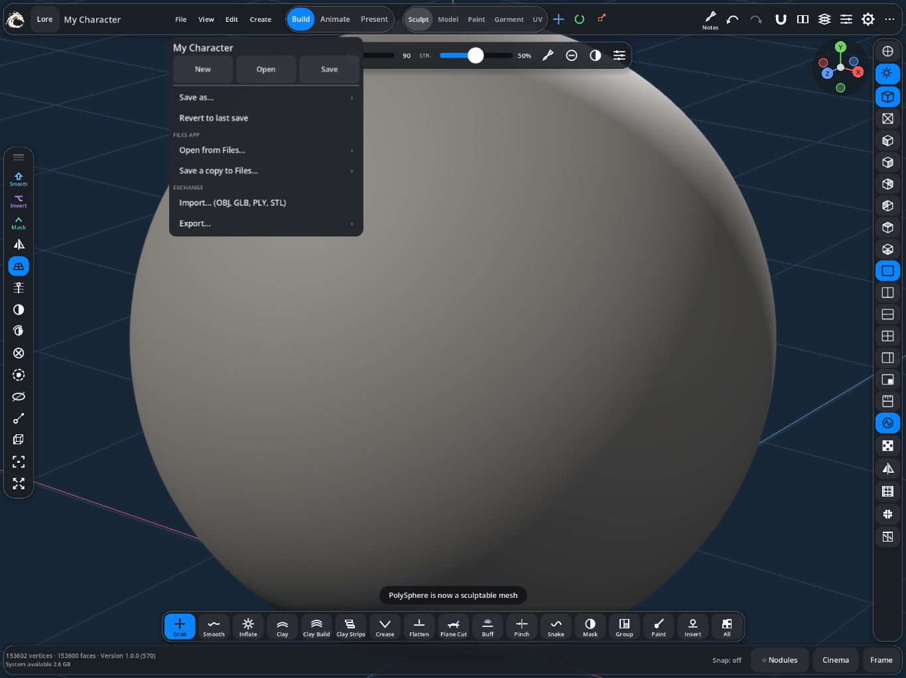
The File menu.
Open File for:
New, Open and Save: your projects.
Save as… to make a copy with a new name, and Revert to last save to throw away changes.
Open from Files… and Save a copy to Files… to move projects in and out of the app, for example to iCloud Drive.
Import… for OBJ, GLB, PLY and STL models, and Export… to send your work out.
Projects live in the app's own storage, which you can also see in the Files app under Character Studio. Deleting the app can delete them, so keep copies of anything important.
6. Sculpt
Sculpting is like working with digital clay. Pick a brush from the bottom bar and stroke the model with Pencil.
Sculpt: brushes along the bottom, size and strength at the top.
The main brushes
Grab: pull big areas into shape.
Smooth: soften bumps.
Inflate: puff an area out, like blowing up a balloon.
Clay, Clay Build and Clay Strips: add material in layers.
Crease: cut sharp lines, such as eyelids and folds.
Flatten and Plane Cut: make flat surfaces and hard planes.
Buff: polish a surface.
Pinch: tighten an edge.
Snake: pull out tendrils, horns or tails.
Mask: protect areas from the other brushes.
All: see every brush.
Brush size and strength are the sliders at the top of the view. The sliders icon there opens each brush's settings, such as falloff and lazy stroke.
Masks, hiding and symmetry
Mask paints areas brushes skip. Masked areas look darker, and the status line shows how much is masked.
Hide and Solo let you work on one part without others in the way.
Symmetry mirrors your strokes across the middle of the model.
Move, Rotate and Scale in Sculpt work on the masked area or the whole part.
Not enough detail to sculpt? Subdivide the part, or remesh it to a higher density. More faces means finer detail, but heavier work for your iPad.
7. Remeshing
A mesh is the net of points and faces that makes up your model. After lots of sculpting it can get messy, and remeshing rebuilds it cleanly.
Simple Quad Remesher: rebuilds the part as tidy four-sided faces (quads) that follow its shape. Best before animating or texturing.
Voxel Remesh: rebuilds the part as an even, joined surface. Good for merging shapes while sculpting.
Press and hold either button for its options, such as how many faces to aim for. If a result doesn't work out, your original is kept, and Undo always takes you back.
8. Model
Model mode is for precise shapes: you edit the mesh's points, edges and faces directly.
Select vertices, edges or faces. Double-tap an edge to select its whole loop.
Extrude pulls faces out to add new shapes, such as limbs.
Inset, Bevel, Loop cut and Bridge add and shape detail.
Knife draws a cut across the surface, and Shape Cutter cuts with a shape.
Modifiers such as Bend, Twist, Taper and Stretch reshape a whole part without changing its mesh, and you can still change them later.
Cut hole uses one closed part to cut through another.
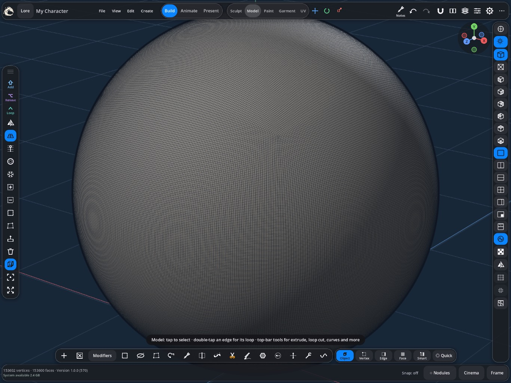
Model mode.
The model tool panel groups these under Select, Edit, Loops, Make and Measure.
9. Parts and Create
A character is usually made of several parts: body, head, eyes, hair and so on. Tap a part in the view to make it active. The Parts panel lists them all, where you can rename, hide, lock and arrange them.
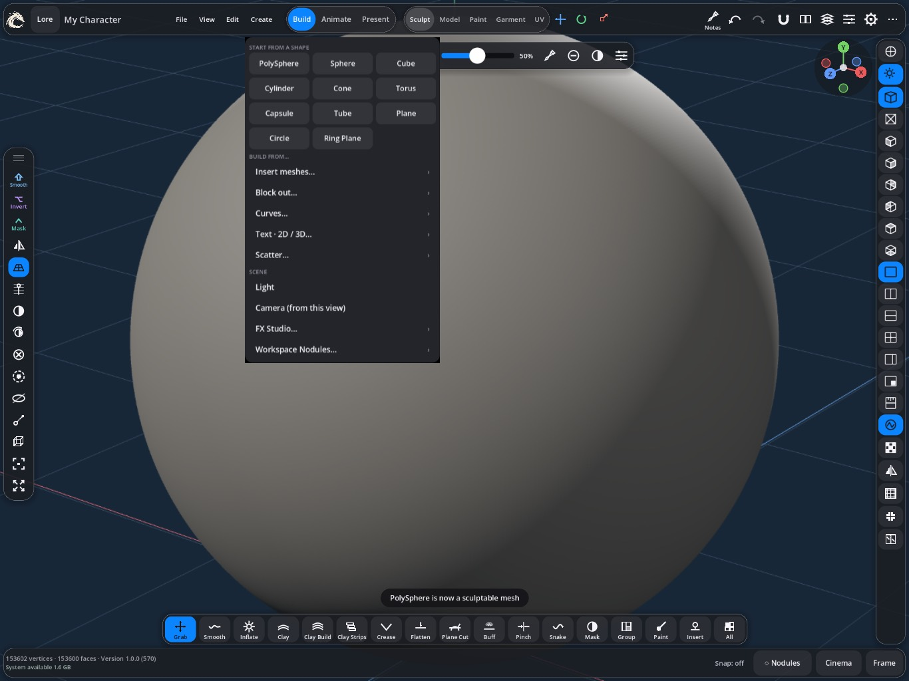
The Create menu: shapes at the top, then builders and scene items.
The Create menu adds new things:
Start from a shape: PolySphere, Sphere, Cube, Cylinder, Cone, Torus, Capsule, Tube, Plane, Circle and Ring Plane.
Build from: insert ready-made meshes, block out a rough figure, draw curves, add 2D or 3D text, or scatter copies.
Scene: add a Light, a Camera from your current view, FX Studio effects, or Workspace Nodules.
10. Paint
In Build › Paint, paint colour straight onto the model with Pencil. Pick a colour, then set the brush size and strength just like in Sculpt.
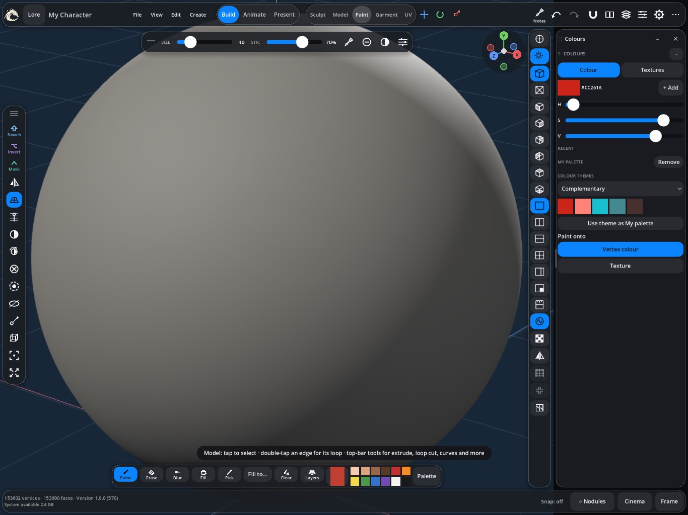
Paint: tools along the bottom, colours on the right.
The bottom bar holds the paint tools: Paint, Erase, Blur, Fill, Pick, Clear and Layers, plus your palette. In the Colours panel, Paint onto switches between vertex colour and a texture.
The colour palette also holds procedural textures, patterns the app generates for you, such as noise and grain.
For detailed textures, such as skin pores or printed fabric, paint on a texture instead. See UV and textures.
11. UV and textures
To put a flat image on a 3D model, the app needs to know how to unfold the model flat, like a cardboard box opened out. That flat layout is called a UV map.
In Build › UV, follow the steps in order:
Mark: tap Auto seams, or draw seams yourself. Seams are where the model gets cut to lie flat, so hide them in less visible places.
Unwrap: flatten the pieces.
Arrange:Pack the pieces neatly into the square.
Check: turn on Checker or Stretch to spot stretched areas, and Inspect to find problems.
Bake: transfer detail into colour and normal maps.
Then create a texture and paint on it, either on the model or on the flat layout. Texture brushes include Brush, Erase, Blur, Clone and Eyedropper. Export textures as PNG, JPG or WebP.
12. Materials and Nodules
A material decides how a surface looks when rendered: skin, metal, glass, cloth or a flat anime colour. Set each part's material in Present › Materials.
Nodules is the app's material builder. Open it with Nodules at the bottom right.
It opens on List, with each material's main settings as sliders: look, surface, toon bands, rim and outline. Graph shows the full node graph, one tap away. Tap Apply Settings to use your changes.
Start from recipe gives you a ready-made material, such as Anime Skin, Glowing Ink or Weathered Armour.
In Graph, drag a wire from one Nodule to another to connect them. With a wire in hand, tap empty space: Add lists only the Nodules that fit.
Preview selected shows what one Nodule produces, which helps you understand a graph.
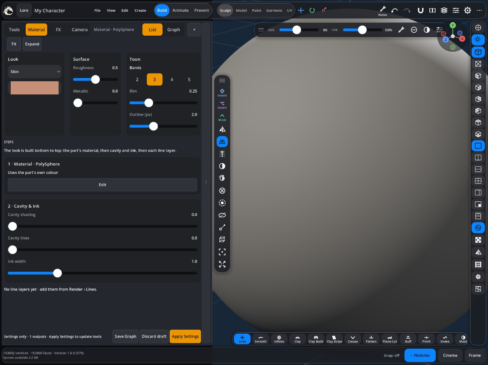
Nodules on the List view, with the material's look, surface and toon settings.
Start from a recipe and change one setting at a time. That's the quickest way to learn what each Nodule does.
13. Garment
Garment mode makes clothes the way real ones are made: from flat pattern pieces sewn together.
On the 2D Draft Canvas, draw a piece, start from a template, or make one from a mask on your model.
Refine it with curve, cut, mirror, measure and snap tools.
In the Piece panel, pick the Fabric and adjust its Shape.
Sew pairs edges together. Auto-pin can help.
Place the pieces around the body, then Fit and simulate so the cloth drapes.
14. Rig
A rig is a skeleton inside your character, so you can pose it. In Animate › Rig, the quickest start is Auto rig, which fits a skeleton and binds every part in one tap. Then check it with Rig check. To do it step by step:
Skeleton: fit a humanoid skeleton to your character, then drag the joints into place. Mirror copies one side to the other.
Bind: attach each part to the skeleton. The app works out how much each bone moves each area.
Weights: fix areas that move wrongly by painting weights. Red means a bone has strong control; blue means weak control.
Pose: bend bones to test the rig, and save poses you like.
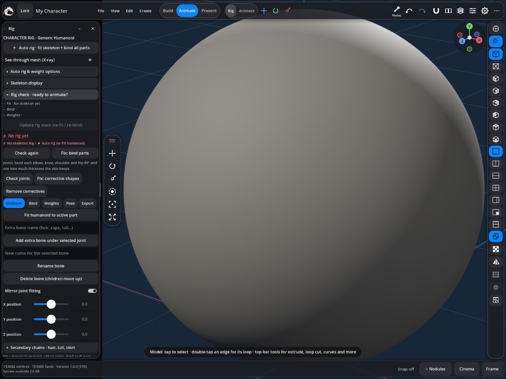
The Rig panel: Auto rig at the top, then Skeleton, Bind, Weights, Pose and Export.
Swinging hair, tails and skirts
Under Secondary chains, tap + Hair, + Tail or + Skirt, then bind that part again. Later, in Animate, Bake secondary motion makes them swing and settle as your character moves.
You can export bound parts with their skeleton as a GLB file for other 3D apps.
15. Animate
Animation is a series of poses over time. Each saved pose is a key frame, and the app fills in the motion between them.
In Animate › Animate, pose your character.
Tap Key frame.
Move the timeline's playhead later, change the pose, and key again.
Tap Play to watch. Turn on Loop to repeat.
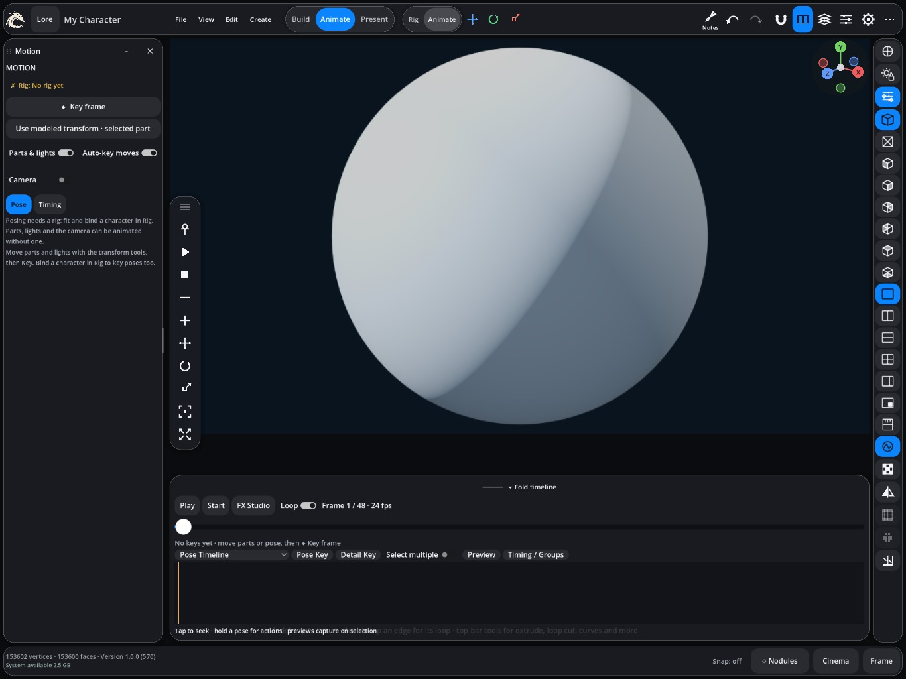
Animate: the Motion panel on the left, the timeline below.
You can also animate parts, lights and the camera, even without a rig.
Auto-key moves keys your changes as you make them.
Timing controls how motion eases between keys: holds, snaps and impacts.
The timeline has a Pose Timeline with picture cards, a track view and a filmstrip. Press and hold a card to duplicate, mirror, copy or delete it.
Secondary motion adds swinging hair, tails and skirts. Set stiffness, damping and gravity, then tap Bake secondary motion. Bake again after changing the animation.
16. Present: building a scene
Present turns your character into a finished shot. Each tool in the switch opens its own panel:
Look: the render style. Standard is realistic, Anime gives cel shading, and Ink is a manga look. It also controls shading bands, line art and outlines.
Light: studio and scene lights. Try a preset rig first, then adjust it.
Camera: frame your shot, choose a lens, and save camera views.
World: sky, ground and fog.
Materials: each part's render material.
Touch-up: draw on top of the finished render.
FX: motion effects and FX Studio.
Output: quality, stills, video and GIF.
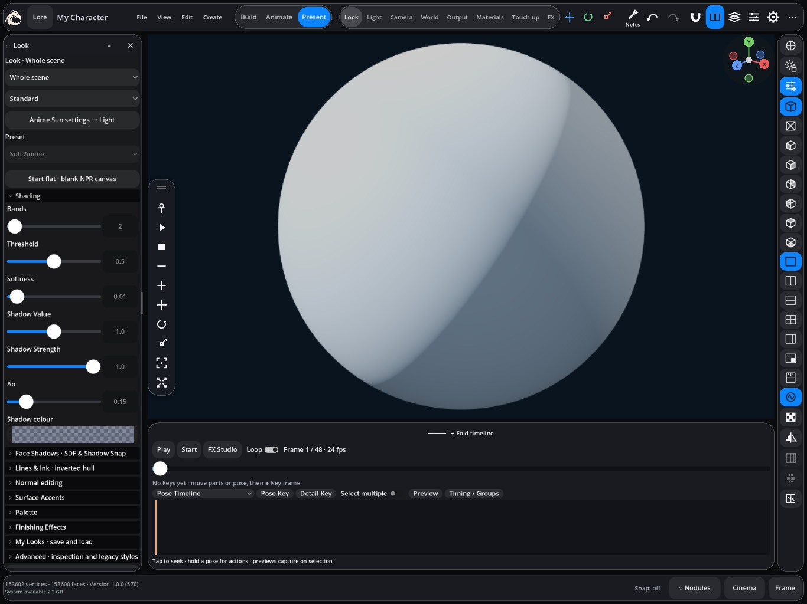
Present › Look: Standard, Anime or Ink, with shading controls.
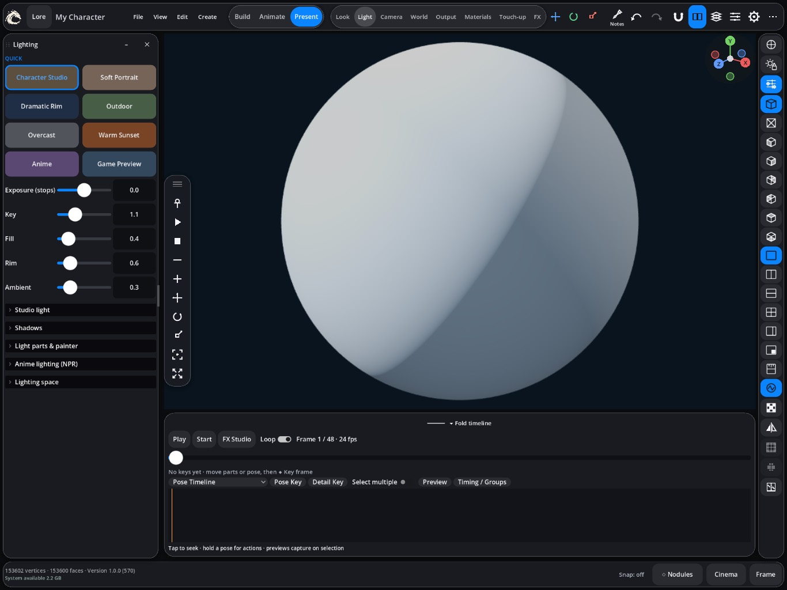
Present › Light.
Use Create › Light and Create › Camera (from this view) to add more lights and cameras, and arrange several characters and props together to build a full scene. Cinema at the bottom right shows your shot without the interface.
17. FX and 3D Pen
FX Studio, in Create or Present › FX, makes effects such as sparks, fire, smoke, clouds, lightning, shockwaves, auras, slashes, speed lines and trails.
Pick a preset and tap Create preset asset.
Tap Place on timeline. It starts at the playhead.
Drag the clip to move it, or drag its end to change how long it lasts.
Open it in Nodules to customise it.
These are stylised effects, not real physics simulations.
3D Pen draws lines in 3D with your Pencil: on a surface, following a bone, or flat on screen. It's great for hand-drawn anime lines and effects.
18. Output and export
Present › Output: render pictures, video, GIFs and turntables, which orbit the camera around your model.
File › Export…: models in formats such as OBJ and GLB, for other 3D apps.
Rig › Export: bound parts with their skeleton as GLB.
UV: texture images as PNG, JPG or WebP.
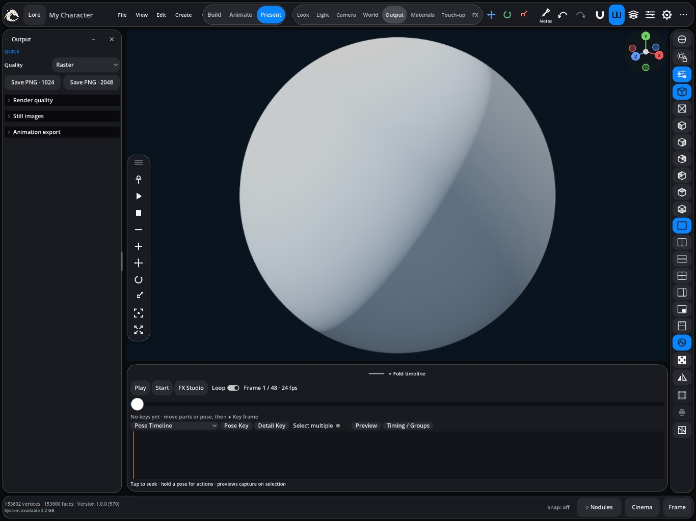
Present › Output.
Exported files appear in the Files app under On My iPad › Character Studio › Exports, unless you choose another place.
19. Views and references
The right rail switches between perspective and orthographic views, front, side, top and other angles, and split screens.
View in the top bar has display options: shaded or wireframe, viewport materials, the floor grid, and the View Inspector, which holds the viewport lighting.
Guides show body proportions to sculpt against.
References: add pictures as an overlay, behind the model, on a board, or as 3D planes in the scene.
Notes lets you sketch and write on the canvas.
20. Settings and your layout
Tap the gear in the top bar. You can search for any setting, and Beginner guide… at the top opens this page.
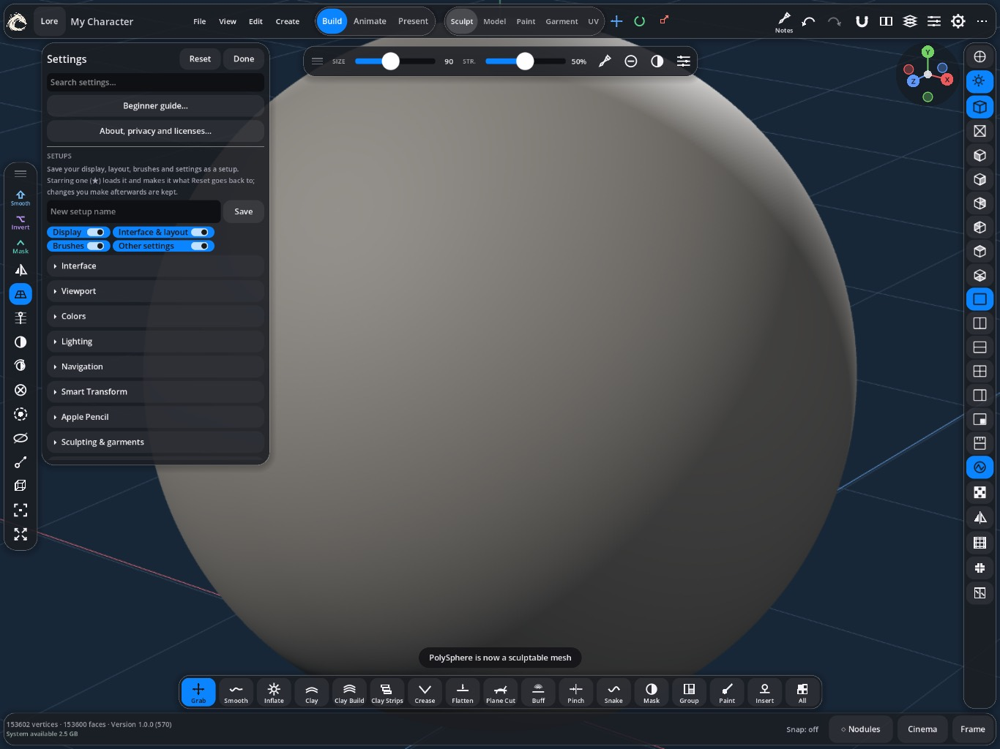
Settings.
Interface: interface size and layout options.
Viewport, Colors and Lighting: how the work area looks.
Navigation and Apple Pencil: how touch and Pencil behave.
Setups: save your display, layout and brushes as a named setup, and star one to open with.
Customize layout, under ⋯, moves, resizes and hides panels and buttons, and picks your Quick bar shortcuts.
About, privacy and licenses shows the app version, privacy policy, support and licenses.
21. Tips and troubleshooting
A brush does nothing: part of the model may be masked. Check the status line, and clear the mask from the Quick bar.
Can't see your model: tap Frame at the bottom right.
The app feels slow: the model may have too many faces. Check the status line, and remesh or work at a lower subdivision level.
Lost your panels: use Settings › Reset, or load a saved setup.
Changed something by accident: undo with a two-finger tap.